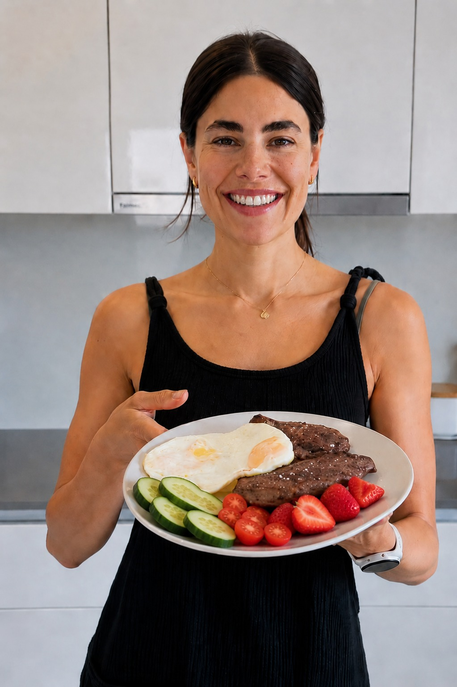

Neste breve vídeo, a Giovanna Paino revela o método exato que ela usou para eliminar mais de 25kg após a gravidez e como ajudou mais de 5.000 mulheres a alcançar o emagrecimento de forma duradoura e sem efeito rebote. Assista antes que saia do ar.
Acesso imediato após a confirmação